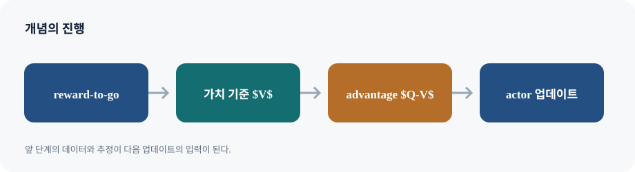

정책경사에서 행동 \(a_t\)는 그 뒤의 보상에만 인과적으로 영향을 준다. 따라서 시점 \(t\)의 점수함수에 전체 episode return 대신 reward-to-go \(G_t=\sum_{k=t}^{T}\gamma^{k-t}r_k\)를 곱해도 기대 gradient는 유지하면서 무관한 과거 보상이 만드는 분산을 줄인다.
상태가치 \(V^\pi(s)=\mathbb E[G_t\mid s_t=s]\), 행동가치 \(Q^\pi(s,a)=\mathbb E[G_t\mid s_t=s,a_t=a]\), advantage \(A^\pi(s,a)=Q^\pi(s,a)-V^\pi(s)\)는 서로 다른 질문에 답한다. 현재 상태가 평균적으로 좋은가(V), 이 행동을 선택했을 때 좋은가(Q), 같은 상태의 평균 행동보다 얼마나 나은가(A)다. 정책경사 정리에서는
임의의 상태기반 baseline \(b(s)\)를 빼도 기대값이 바뀌지 않는다. 이유는 \(\mathbb E_{a\sim\pi}[\nabla\log\pi(a\mid s)b(s)]=b(s)\nabla\sum_a\pi(a\mid s)=0\)이기 때문이다. \(b=V\)를 택하면 advantage를 얻는다. baseline은 분산을 줄이지만 부정확한 근사치를 쓰면 variance 감소 폭이 작아질 수 있다.
Actor–critic은 actor가 정책을, critic이 가치함수를 학습한다. critic이 trajectory return의 noisy label 대신 bootstrap target을 제공하면 표본 효율을 높일 수 있지만, critic 오차가 actor 업데이트에 편향을 전달한다. 작은 step을 여러 번 사용할지, 추정 편향을 얼마나 감수할지가 핵심 설계 선택이다.
표지에서 이 강의의 주제를 확인하고, 뒤따르는 예시가 어떤 의사결정 문제를 설명하는지 질문을 세워 둡니다.
정책경사 복습
trajectory 미분에서 시간별 정책 로그확률이 나타나는 이유를 다시 연결한다. 이번 장의 목표는 gradient 공식을 바꾸는 것이 아니라, 각 행동에 곱하는 return 신호의 분산을 낮추는 것이다.
03-1 / 02
Plan for today
슬라이드 02
오늘의 목차는 개념의 순서를 보여 줍니다. 각 항목을 읽을 때 앞에서 배운 도구가 다음 알고리즘의 어떤 약점을 해결하는지 연결합니다.
03-1 / 03
Direct policy differentiation
슬라이드 03
이 슬라이드의 Direct policy differentiation를 정책경사 복습 맥락에서 읽는다. 그림의 입력·행동·결과를 구분하고, 식이 있다면 각 항이 어떤 가정과 학습 신호를 나타내는지 설명과 대조한다.
03-1 / 04
Direct policy differentiation
슬라이드 04
이 슬라이드의 Direct policy differentiation를 정책경사 복습 맥락에서 읽는다. 그림의 입력·행동·결과를 구분하고, 식이 있다면 각 항이 어떤 가정과 학습 신호를 나타내는지 설명과 대조한다.
03-1 / 05
Policy gradient
슬라이드 05
이 슬라이드의 Policy gradient를 정책경사 복습 맥락에서 읽는다. 그림의 입력·행동·결과를 구분하고, 식이 있다면 각 항이 어떤 가정과 학습 신호를 나타내는지 설명과 대조한다.

가치함수와 Actor–Critic의 핵심 구조
03-1 / 06
Summary of policy gradient methods
슬라이드 06
요약의 항목을 정의·목적함수·데이터 요구량·주요 실패 원인으로 나누어 정리합니다. 이름이 비슷한 알고리즘의 차이는 이 네 축에서 드러납니다.
03-1 / 07
Plan for today
슬라이드 07
오늘의 목차는 개념의 순서를 보여 줍니다. 각 항목을 읽을 때 앞에서 배운 도구가 다음 알고리즘의 어떤 약점을 해결하는지 연결합니다.
03-1 / 08
Useful math
슬라이드 08
이 슬라이드의 Useful math를 기댓값과 reward-to-go 맥락에서 읽는다. 그림의 입력·행동·결과를 구분하고, 식이 있다면 각 항이 어떤 가정과 학습 신호를 나타내는지 설명과 대조한다.
기댓값과 reward-to-go
로그미분 항등식 \(\nabla p=p\nabla\log p\)와 tower property가 핵심이다. 미래 반환만 사용하는 것이 왜 unbiased인지 보이려면, 현재 행동과 무관한 과거 보상 항의 조건부 기댓값이 score의 평균 0과 곱해져 사라짐을 확인한다.
03-1 / 09
Score-function identity
슬라이드 09
이 슬라이드의 Score-function identity를 기댓값과 reward-to-go 맥락에서 읽는다. 그림의 입력·행동·결과를 구분하고, 식이 있다면 각 항이 어떤 가정과 학습 신호를 나타내는지 설명과 대조한다.
03-1 / 10
Reward to go:
슬라이드 10
현재 행동은 현재보다 앞선 보상을 원인적으로 바꾸지 않습니다. score의 조건부 평균이 0이므로 과거 보상 항을 제거해도 기대 정책경사는 보존됩니다.
03-1 / 11
Reduce variance of policy gradient
슬라이드 11
이 슬라이드의 Reduce variance of policy gradient를 가치함수 정의와 Bellman 관계 맥락에서 읽는다. 그림의 입력·행동·결과를 구분하고, 식이 있다면 각 항이 어떤 가정과 학습 신호를 나타내는지 설명과 대조한다.
가치함수 정의와 Bellman 관계
Q는 첫 행동을 고정한 뒤 따르는 정책의 기대 반환이고, V는 정책 행동에 대해 Q를 평균한 값이다. TD 잔차 \(\delta_t=r_t+\gamma V(s_{t+1})-V(s_t)\)는 한 단계 bootstrap target과 현재 예측의 차이다.
03-1 / 12
Reduce variance of policy gradient
슬라이드 12
이 슬라이드의 Reduce variance of policy gradient를 가치함수 정의와 Bellman 관계 맥락에서 읽는다. 그림의 입력·행동·결과를 구분하고, 식이 있다면 각 항이 어떤 가정과 학습 신호를 나타내는지 설명과 대조한다.
03-1 / 13
Reduce variance of policy gradient
슬라이드 13
이 슬라이드의 Reduce variance of policy gradient를 가치함수 정의와 Bellman 관계 맥락에서 읽는다. 그림의 입력·행동·결과를 구분하고, 식이 있다면 각 항이 어떤 가정과 학습 신호를 나타내는지 설명과 대조한다.
03-1 / 14
Reduce variance of policy gradient
슬라이드 14
이 슬라이드의 Reduce variance of policy gradient를 가치함수 정의와 Bellman 관계 맥락에서 읽는다. 그림의 입력·행동·결과를 구분하고, 식이 있다면 각 항이 어떤 가정과 학습 신호를 나타내는지 설명과 대조한다.
03-1 / 15
Value functions
슬라이드 15
V는 상태에서 시작하는 기대 반환, Q는 현재 행동을 고정한 기대 반환입니다. Q를 정책 행동에 대해 평균하면 V가 된다는 관계를 확인합니다.
가치 추정과 할인
Monte Carlo는 실현 반환을 직접 맞추어 편향이 작지만 분산이 크다. TD는 다음 상태의 예측값으로 bootstrap해 분산을 낮추지만 critic 오차를 전달한다. \(\gamma\)는 미래를 얼마나 중시하는지 정하며, 단순히 수치 안정화 상수로만 보면 안 된다.
03-1 / 16
Value functions
슬라이드 16
V는 상태에서 시작하는 기대 반환, Q는 현재 행동을 고정한 기대 반환입니다. Q를 정책 행동에 대해 평균하면 V가 된다는 관계를 확인합니다.
03-1 / 17
Summary of alue
슬라이드 17
요약의 항목을 정의·목적함수·데이터 요구량·주요 실패 원인으로 나누어 정리합니다. 이름이 비슷한 알고리즘의 차이는 이 네 축에서 드러납니다.
03-1 / 18
Fit state value function
슬라이드 18
V는 상태에서 시작하는 기대 반환, Q는 현재 행동을 고정한 기대 반환입니다. Q를 정책 행동에 대해 평균하면 V가 된다는 관계를 확인합니다.
03-1 / 19
Discount factor r1 r2 r3 r4 r5
슬라이드 19
할인율은 먼 미래 보상에 곱할 가중치입니다. 정의한 반환식에서 시간 인덱스에 따라 할인 지수가 어떻게 달라지는지 계산합니다.
03-1 / 20
Discount factor
슬라이드 20
할인율은 먼 미래 보상에 곱할 가중치입니다. 정의한 반환식에서 시간 인덱스에 따라 할인 지수가 어떻게 달라지는지 계산합니다.
03-1 / 21
Better estimate of reward to go:
슬라이드 21
현재 행동은 현재보다 앞선 보상을 원인적으로 바꾸지 않습니다. score의 조건부 평균이 0이므로 과거 보상 항을 제거해도 기대 정책경사는 보존됩니다.
03-1 / 22
Q(st, at)
슬라이드 22
이 슬라이드의 Q(st, at)를 가치 추정과 할인 맥락에서 읽는다. 그림의 입력·행동·결과를 구분하고, 식이 있다면 각 항이 어떤 가정과 학습 신호를 나타내는지 설명과 대조한다.
03-1 / 23
Q(st, at)
슬라이드 23
이 슬라이드의 Q(st, at)를 가치 추정과 할인 맥락에서 읽는다. 그림의 입력·행동·결과를 구분하고, 식이 있다면 각 항이 어떤 가정과 학습 신호를 나타내는지 설명과 대조한다.
03-1 / 24
Baseline:
슬라이드 24
상태에만 의존하는 baseline은 행동 분포에 대한 score 평균을 0으로 만들어도 기댓값을 바꾸지 않습니다. baseline을 action-dependent로 만들면 이 증명이 자동으로 성립하지 않습니다.
Baseline에서 advantage로
상태만의 함수인 baseline은 행동 평균을 바꾸지 않으므로 policy-gradient 기대값을 보존한다. \(A=Q-V\)는 절대 보상의 크기 대신 같은 상태에서의 상대적 이득을 준다. baseline을 action에도 의존하게 만들면 일반적으로 영기대 항등식이 깨질 수 있다.
상태 baseline은 왜 기대 정책경사를 바꾸지 않는가?
고정된 상태에서 b(s)는 행동과 무관하므로 E[∇θ log π(a|s)b(s)]=b(s)∇θΣaπ(a|s)=0이다. 따라서 baseline을 빼도 기대값은 같고, 적절한 baseline은 표본 변동을 줄인다.
03-1 / 25
Baseline
슬라이드 25
상태에만 의존하는 baseline은 행동 분포에 대한 score 평균을 0으로 만들어도 기댓값을 바꾸지 않습니다. baseline을 action-dependent로 만들면 이 증명이 자동으로 성립하지 않습니다.
03-1 / 26
Baseline
슬라이드 26
상태에만 의존하는 baseline은 행동 분포에 대한 score 평균을 0으로 만들어도 기댓값을 바꾸지 않습니다. baseline을 action-dependent로 만들면 이 증명이 자동으로 성립하지 않습니다.
03-1 / 27
How does variance change with baseline?
슬라이드 27
상태에만 의존하는 baseline은 행동 분포에 대한 score 평균을 0으로 만들어도 기댓값을 바꾸지 않습니다. baseline을 action-dependent로 만들면 이 증명이 자동으로 성립하지 않습니다.
03-1 / 28
How does variance change with baseline?
슬라이드 28
상태에만 의존하는 baseline은 행동 분포에 대한 score 평균을 0으로 만들어도 기댓값을 바꾸지 않습니다. baseline을 action-dependent로 만들면 이 증명이 자동으로 성립하지 않습니다.
03-1 / 29
Reduce variance using baseline
슬라이드 29
상태에만 의존하는 baseline은 행동 분포에 대한 score 평균을 0으로 만들어도 기댓값을 바꾸지 않습니다. baseline을 action-dependent로 만들면 이 증명이 자동으로 성립하지 않습니다.
03-1 / 30
Reduce variance using baseline
슬라이드 30
상태에만 의존하는 baseline은 행동 분포에 대한 score 평균을 0으로 만들어도 기댓값을 바꾸지 않습니다. baseline을 action-dependent로 만들면 이 증명이 자동으로 성립하지 않습니다.
03-1 / 31
Summary of reducing variance of policy gradient
슬라이드 31
요약의 항목을 정의·목적함수·데이터 요구량·주요 실패 원인으로 나누어 정리합니다. 이름이 비슷한 알고리즘의 차이는 이 네 축에서 드러납니다.
Actor–critic의 데이터 흐름
actor는 \(\nabla\log\pi\) 방향으로 advantage가 큰 행동의 확률을 높이고, critic은 상태 또는 행동 가치를 회귀한다. on-policy actor–critic은 새 궤적을 계속 요구할 수 있고, critic 재사용은 효율과 추정 편향 사이의 절충이다.
03-1 / 32
REINFORCE
슬라이드 32
이 슬라이드의 REINFORCE를 Actor–critic의 데이터 흐름 맥락에서 읽는다. 그림의 입력·행동·결과를 구분하고, 식이 있다면 각 항이 어떤 가정과 학습 신호를 나타내는지 설명과 대조한다.
03-1 / 33
Actor-critic algorithm
슬라이드 33
actor는 행동 확률을 조정하고 critic은 그 행동을 평가할 학습 신호를 제공합니다. critic은 보상을 대신하는 것이 아니라 정책경사의 분산을 낮추도록 반환을 근사합니다.
03-1 / 34
Actor-critic is sample efficient than REINFORCE
슬라이드 34
actor는 행동 확률을 조정하고 critic은 그 행동을 평가할 학습 신호를 제공합니다. critic은 보상을 대신하는 것이 아니라 정책경사의 분산을 낮추도록 반환을 근사합니다.
03-1 / 35
Next class
슬라이드 35
이 페이지는 이번 강의의 경계를 정리합니다. 마지막 개념이 다음 단원의 첫 질문으로 어떻게 이어지는지 한 문장으로 요약해 보세요.